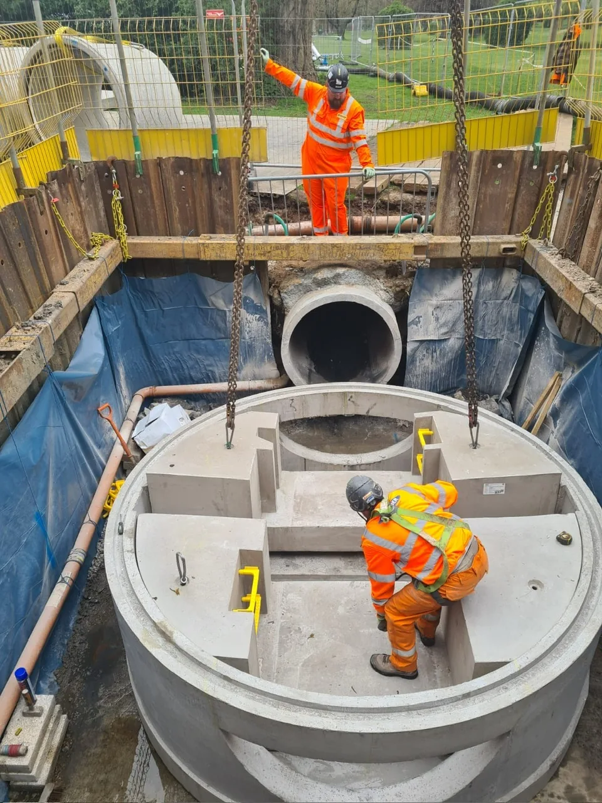

Infrastructure
Kilburn to Marehay Rising Main
Installation of 4.5km of ductile iron pipework in highways with permanent tarmac reinstatement. Includes construction of Horizontal Directional Drilling drive and reception pits, with all connection works hydrostatically pressure tested to 6 Bar. Connected to new sewage pumping station and upgraded sewage treatment works.